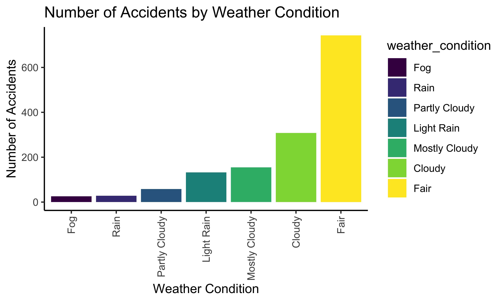
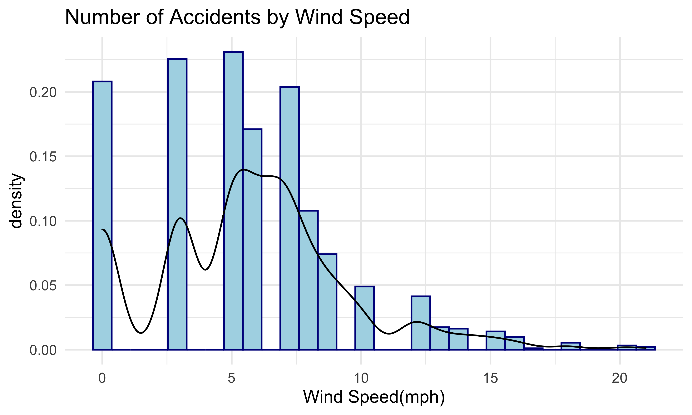
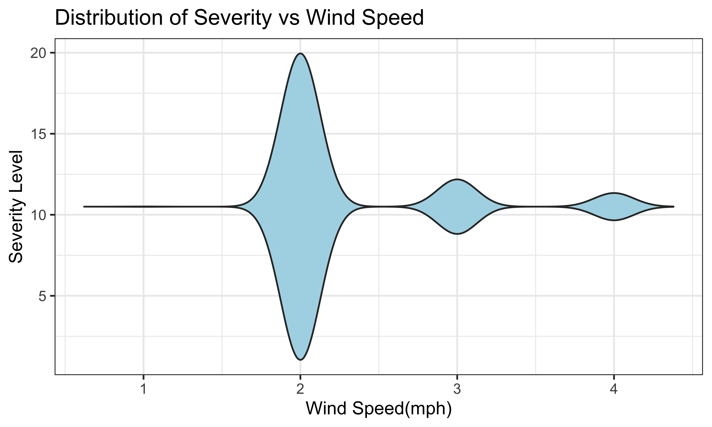

We also want to investigate how weather conditions make impacts on car accidents. Weather conditions and wind speed will be used to examine the relationship between weather and accidents’ severity.
accident_weather_table = accidents2 %>%
group_by(weather_condition) %>%
dplyr::summarize(obs = n()) %>%
arrange(desc(obs))
accident_weather_bar = accident_weather_table %>%
drop_na() %>%
filter(obs > 10) %>%
mutate(weather_condition = fct_reorder(weather_condition, obs)) %>%
ggplot(aes(x = weather_condition, y = obs, fill = weather_condition)) +
geom_bar(stat = "identity") +
theme_classic() +
labs(title = "Number of Accidents by Weather Condition",
y = "Number of Accidents",
x = "Weather Condition")
accident_weather_bar + theme(axis.text.x = element_text(angle = 90, vjust = 0.5, hjust=1))
The plot shows the frequency of accidents by weather. The most common weather condition of accidents is fair, which may deviate from common sense. There are two possible reasons. The first one is that there are many more days of fair than other weather in 2020 in New York. Therefore, it is reasonable that the frequency in fair weather is higher. The other reason is that during fair weather, people tend to behave with less caution. Thus the probability of accidents increases. This question is worth further research, which has been listed in our group’s further research plan. Other common types of weather are cloudy, mostly cloudy, light rain, partly cloudy, rain, and fog.
accidents_windspeed = accidents2 %>%
ggplot(aes(x = wind_speed_mph, y = ..density..)) +
geom_histogram(color = "darkblue", fill = "lightblue") +
labs(
title = "Number of Accidents by Wind Speed",
x = "Wind Speed(mph)"
) +
geom_density()
accidents_windspeed
Next, this plot shows the frequency of accidents by wind speed. As shown in the plot, the distribution of frequency is right-skewed. The most common wind speed is from 0 to 7.5 miles per hour. The frequency of this interval is higher than 150. From 7.5 to 12.5 miles per hour, the frequency is moderate. The frequency of car accidents with wind speed larger than 12.5 miles per hour is less than 25.
ggplot(accidents2, aes(x = wind_speed_mph, y = severity)) +
geom_violin(trim = FALSE, fill = "light blue") +
theme_bw() +
coord_flip() +
labs(
title = "Distribution of Severity vs Wind Speed",
y = "Wind Speed(mph)",
x = "Severity Level"
)
This violin plot shows the range of wind speed in each severity level. The most common severity is severity 2. For severity 2, the range of wind speed is from 0 to 20 miles per hour. For severity 3, the range is from 8 to 12.5 miles per hour. The range of wind speed of severity 4 is from 9 to 11.25 miles per hour. For severity 1, there are only 4 observations, so there is only a line for severity 1.